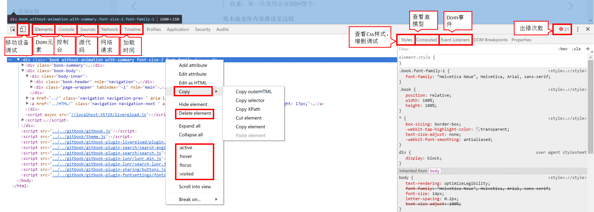
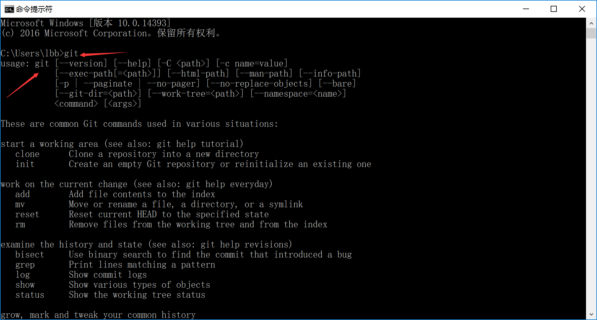

课前准备
目标清单
- 安装一款文本编辑器(Sublime Text3 & WebStorm & VSCode)，进行常用配置。
- 安装chrome浏览器，了解chrome基本的调试功能。
- 安装git，了解github的使用，会使用github提交代码。
- 认识markdown，学习markdown基本语法，以后统一使用markdown语法进行回答作业。
文本编辑器
- 用途:编写代码、文档、甚至写作业。
- 为什么要装插件？代码提示，代码补全，代码自动格式化……提高开发效率！
- 安装什么插件？
- 如何安装插件？
Sublime Text3
安装Package Control
import urllib.request,os,hashlib; h = 'df21e130d211cfc94d9b0905775a7c0f' + '1e3d39e33b79698005270310898eea76'; pf = 'Package Control.sublime-package'; ipp = sublime.installed_packages_path(); urllib.request.install_opener( urllib.request.build_opener( urllib.request.ProxyHandler()) ); by = urllib.request.urlopen( 'http://packagecontrol.io/' + pf.replace(' ', '%20')).read(); dh = hashlib.sha256(by).hexdigest(); print('Error validating download (got %s instead of %s), please try manual install' % (dh, h)) if dh != h else open(os.path.join( ipp, pf), 'wb' ).write(by)
常用插件：
- emmet 前端神器。一个可以极大提高web开发者HTML和CSS工作效率的工具箱组件。
WebStorm
VSCode
Chrome 浏览器
常用功能：


更多高级功能参考链接：
Git & github
git是什么？
分布式代码版本控制系统、内容版本控制系统（不唯一，但最常用）
解决如下问题：
- 文档v1.doc,文档v2.doc……文档最终版.doc，文档最最终版.doc……
- “把你改好的代码拷给我”“你都改了哪啊？”“呀呀呀，改错了！之前的还留着么？”“没有！”
- ……
版本控制系统：记录内容的增删改，不同版本的同步、回滚，多人协作等。 与同类常用软件SVN对比：SVN为集中式，与服务器断网状态时无法提交版本；而git是分布式，在本机也可以提交版本。
git安装
根据自己的系统下载并安装git。
打开控制台（Win+R），输入git出现如下图，则说明安装成功：  
github
代码托管平台，只支持git作为版本控制工具。
- 开源代码学习平台：900万开发者使用，知名开源项（jQuery,AngularJs,React Native等）,个人开源项目等。
- 订阅、讨论组、文本渲染、在线文件编辑器、协作图谱（报表）、代码片段分享（Gist）等功能。
如何优雅使用git&github?
从本地到远程 新建一个工作文件目录，并进入该目录。执行：
git init //新建本地仓库新建一个ReadMe.md，随便写点儿什么。将该文件提交到仓库分两步：
git add ReadMe.md // <file>/. git commit -m "add readme" // <message>在github上新建一个空仓库，并关联：
git remote add git remote add origin git@github.com:yourname/projectname.git注意：第一次使用会有SSH警告。
将本地仓库内容推送至远程
git push -u origin master从远程到本地
从远程克隆到本地要执行:
git clone git clone git@github.com:author_name/project_name.git
注意 对仓库提交修改需要权限，因此在作业仓库中提交自己的作业一定要事先将自己的github用户名发给Mark老师，Mark老师会给大家开放权限。
Markdown
Markdown是什么？
轻量级标记语言；标签代替排版、专注写作！ 常用只有不到十个标签，非常简洁！
示例: 项目的Readme.md，本教案；
Markdown编辑器
编辑文档，大多支持边写边预览。
- windows平台：Sublime text + OmniMarkupPreviewer；MarkdownPad; Haroopad；蚂蚁笔记等；
- mac平台：Macdown, Byword, mou 等
- 在线平台：马克飞象、Cmd Markdown
Markdown常用语法
标题
# 一级标题 ## 二级标题 ### 三级标题列表
* 无序列表 * 无序列表 - 无序列表 - 无序列表 1. 有序列表 2. 有序列表 3. 有序列表代码块
```html/css/javascript/……语言类型，可省略 代码部分 ```
链接
[链接文字](网址) [百度](baidu.com)图片
表格
| Item | Value | Qty | | :-------- | --------:| :--: | | Computer | 1600 USD | 5 | | Phone | 12 USD | 12 | | Pipe | 1 USD | 234 |引用
> 引用的文字强调
斜体：_文字_,*文字* 黑体：__文字__,**文字**
注意：不同的编辑器对markdown的语法支持可能不同；回车换行对解析非常重要。
tips
课后练习
- 安装Sublime Text3 或 WebStorm 或 VSCode 和基本插件、chrome浏览器、git。
- 选择一款知识管理平台。
- 截图并标注chrome浏览器调试常用功能。
- 注册github账号，在本地新建一个git仓库，使用markdown语法编写此次练习完成情况、心得，最后push到github。
- 把github账号给Mark老师